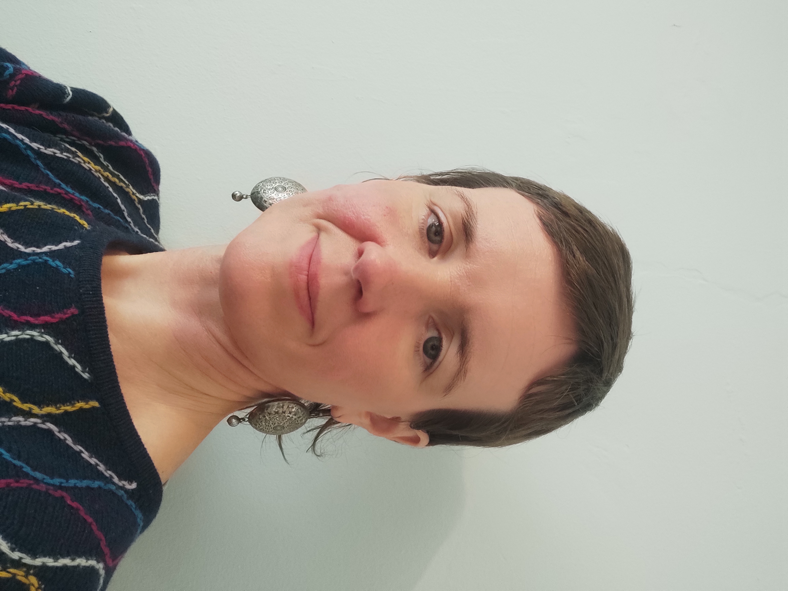
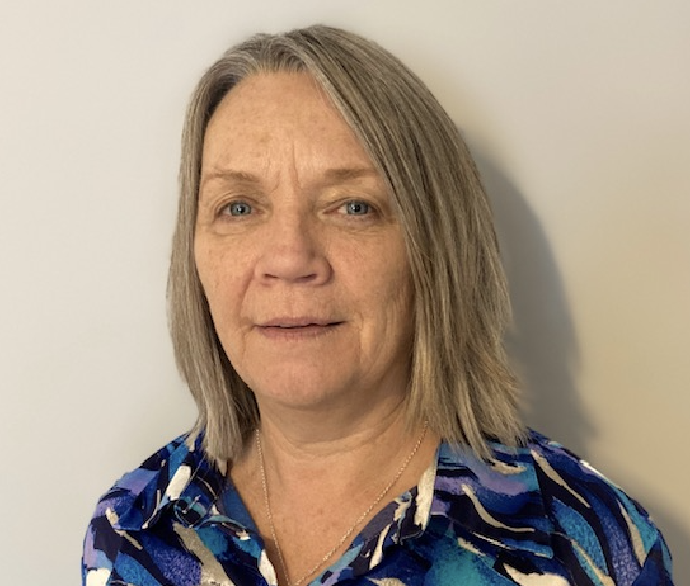

Our Background
We are Humanistic & Integrative Psychotherapists and Counsellors, all accredited by the Irish Association of Humanistic & Integrative Psychotherapy (IAHIP).
We all trained with the highly regarded Flatstone Institute in Cork. Flatstone provided an experientially-based training, focused on creating an environment for in-depth relational learning. Their aim was to develop psychotherapists that could offer true healing and life-enhancing psychotherapy. We continue to work in this relational way.
We are dedicated to creating safe, confidential and non-judgemental spaces. We promote openness, curiosity, authenticity, self-acceptance, self-care and nurturing.
We draw from a variety of therapeutic modals to guide and support you towards self-discovery and healing, in both practical and nurturing ways.
All members of Therapy Journey Ireland:
- Run our own private practice at various locations in Cork and Kerry
- Provides in person and online therapy and counselling
- Offer personalised one-to-one therapy, tailored to the individual’s specific needs
- Offer therapeutic group options, providing a variety of supportive and collaborative environments for personal growth
- Work with individuals aged 16+
- Are fully insured
- Have completed Childrens First training and GDPR training

Ann Jordan

Mary Coleman

Mary Malone
